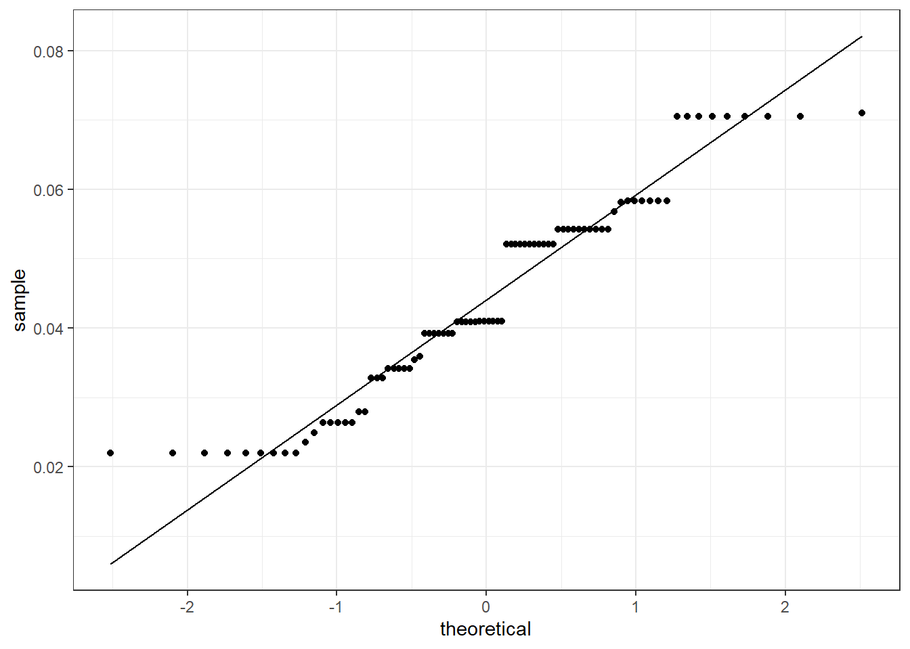

options(repos = c(CRAN = "https://cloud.r-project.org/"))
install.packages("devtools")
devtools::install_local("C:/Users/Josie/OneDrive/Desktop/EES/EES Stats/lipdR-main")
library(knitr)
library(scales)
library(tidyverse)
library(tidymodels)
library(lipdR)
theme_set(theme_bw())Climate Change and Sedimentation: Exploring the Impact of Temperature on Sedimentation
EES 4891/5891: Probability and Statistics for Geosciences
Setup
Set up R environment by loading the necessary libraries
Introduction
For this project, I will be analyzing a dataset I found on NOAA titled “Adelaid Tarn, New Zealand Air Temperature Reconstruction over the Last 16,000 Years.” This study obtained pollen and plant microfossils from a small lake in South Island, New Zealand, and used it to create a 16,000-year vegetation and climate reconstruction. I am interested in this dataset because I am planning to study abroad in New Zealand, and I find it fascinating how pollen and plant fossils can tell us about past climates and environmental changes, which can then inform us about our current and future environments.
Data set
The dataset used in this study is titled “Adelaide Tarn, New Zealand Air Temperature Reconstruction over the Last 16,000 Years,” and was obtained from the NOAA National Centers for Environmental Information. It was originally compiled by Jara et al. (2015) as part of a study reconstructing climate and vegetation dynamics in the South Island of New Zealand. This dataset includes variables such as age (calendar year before present), temperature (surface air temperature), and depth. The dataset covers periods of climatic change, finding that warming periods 13,000-10,000 years ago and 7,000 to 6,000 years ago led to forest expansion, while cooling periods 10,000-7,000 years ago and the last 3,000 years led to reduced forests. It also found that climate patterns matched Antarctic and Southern Ocean trends from 15,000 years ago until about 6,000 years ago, and the switch is attributed to El Nino events causing regional cooling and forest decline. There are 87 rows of data available.
Citation: Jara, Ignacio A.; Newnham, Rewi M.; Vanderfoes, Marcus J.; Foster, Courtney R.; Lowe, David J.; Wilmshurst, Janet M.; Moreno, Patricio I.; Renwick, James A.; Homes, Aline M. 2015. Pollen-climate reconstruction from northern South Island, New Zealand (41°S), reveals varying high- and low-latitude teleconnections over the last 16 000 years. Journal of Quaternary Science, 30(8), 817-829. doi: 10.1002/jqs.2818
I loaded the dataset using the lipdR package, which allows for reading and interacting with Linked Paleo Data files. The dataset was downloaded from NOAA and read into R as a structured list.
ds <- readLipd("C:/Users/Josie/OneDrive/Desktop/EES/EES Stats/AdelaideTarn.Jara.2015 (2).lpd")[1] "Loading 1 datasets from C:/Users/Josie/OneDrive/Desktop/EES/EES Stats/AdelaideTarn.Jara.2015 (2).lpd..."
[1] "reading: AdelaideTarn.Jara.2015 (2).lpd"To prepare the dataset for analysis, I extracted the measurement tables containing the core variables from the LiPD structure.
paleo_data <- ds$paleoData[[1]]$measurementTable[[1]]
chron_data <- ds$chronData[[1]]$measurementTable[[1]]
temperature <- paleo_data$temperature$values
depth <- paleo_data$depth$values
age_depth <- unlist(chron_data$depth$values)
age_values <- unlist(chron_data$age$values)
interp_age <- approx(x = age_depth, y = age_values, xout = depth)$ydf <- data.frame(
temperature = temperature,
depth = depth,
age = interp_age
)
head(df) temperature depth age
1 0.10049797 1 NA
2 0.07955347 5 NA
3 0.08819472 10 NA
4 -0.00266558 15 1083.583
5 0.01823257 20 1112.542
6 -0.05837313 25 1141.500Descriptive Statistics
To understand the basic characteristcs of the dataset, I calculated summary statistics and standard deviations for the three key variables: temperature, depth, and age.
summary(df$temperature) Min. 1st Qu. Median Mean 3rd Qu. Max.
-0.67013 -0.18435 0.09102 0.00579 0.20681 0.40468 summary(df$depth) Min. 1st Qu. Median Mean 3rd Qu. Max.
1 133 268 271 411 547 summary(df$age) Min. 1st Qu. Median Mean 3rd Qu. Max. NA's
1084 3205 6526 6526 9870 12088 20 sd(df$temperature)[1] 0.2675427sd(df$depth)[1] 160.4534sd(df$age, na.rm = TRUE)[1] 3604.165This shows that temperature has a fairly symmetric distribution around 0, but the slightly lower median could mean a leftwards skew. Depth also looks fairly symmetric. Age has a wide spread, and is missing 20 values, but the mean and median are equal. It has a large standard deviation but that is understandable since the data ranges across thousands of years.
Next, I made some histograms and kernel density plots to begin to visualize the data.
ggplot(df, aes(x = temperature)) +
geom_histogram(aes(y = after_stat(density)), bins = 15, fill = "lightblue", color = "white") +
geom_density(color = "darkblue", linewidth = 0.5) +
labs(title = "Temperature Distribution", x = "Temperature (°C)", y = "Density")ggplot(df, aes(x = depth)) +
geom_histogram(aes(y = after_stat(density)), bins = 25, fill = "pink", color = "white") +
geom_density(color = "darkblue", linewidth = 0.5) +
labs(title = "Depth Distribution", x = "Depth (cm)", y = "Density")ggplot(df |> filter(!is.na(age)), aes(x = age)) +
geom_histogram(aes(y = after_stat(density)), bins = 10, fill = "purple", color = "white") +
geom_density(color = "darkblue", linewidth = 0.5) +
labs(title = "Age Distribution", x = "Age (years Before Present)", y = "Density")For the temperature histogram, it is right skewed, most values are towards the lower end with fewer values by the tail. This suggests that colder temperatures were seen more frequently, with a few higher temperature anomalies.
For the depth histogram, the shape is fairly uniform. This suggests that the sediment core was sampled relatively evenly throughout the depth, which is ideal for calculating sedimentation rates and making comparisons.
For the age histogram, the shape has several peaks and dips. Thus, the age values are not evenly distributed– there must be intervals of slow sediment accumulation and high accumulation. These could indicate shifts in depositional environments.
Next, I made a Q-Q plot to visualize normality for each variable.
ggplot(df, aes(sample = temperature)) +
geom_qq() + geom_qq_line(color = "red") +
labs(title = "Q-Q Plot: Temperature")# Depth
ggplot(df, aes(sample = depth)) +
geom_qq() + geom_qq_line(color = "red") +
labs(title = "Q-Q Plot: Depth")# Age (filter out NAs)
ggplot(df |> filter(!is.na(age)), aes(sample = age)) +
geom_qq() + geom_qq_line(color = "red") +
labs(title = "Q-Q Plot: Age")For the temperature Q-Q plot, the data is roughly normally distributed, the points generally align with the line. However there is some deviation at the upper and lower ends.
For the depth Q-Q plot, the data here does not show a normal distributed, with a significant departure from the red line, especially at the tails. The data is likely skewed or has outliers.
For the age Q-Q plot, it shows a similar pattern as the depth plot. Large deviations shown, especially at the higher end.
Research Questions
This study aims to explore how climate variation influenced sediment deposition over time at Adelaide Tarn. Specifically, I want to investigate the relationship between temperature (used as an indicator for climate change) and sedimentation rate, which is derived from changes in depth and age.
My main research question is: How were sedimentation rates affected by climate change during the period recorded in the sediment core?
Sub-questions I will look at include:
Does temperature correlate significantly with sedimentation rate?
Does sedimentation rate show significant variability with temperature?
Hypotheses and Tests
Hypotheses
Main Hypothesis: periods of climatic extremes are associated with increased sedimentation rates, suggesting that significant climate cooling and warming may have influenced depositional processes such as erosion or runoff.
Null Hypothesis: there is no significant relationship between sedimentation rate and temperature.
Methods
First I will calculate sedimentation rates using the age-depth relationship. I will also clean up the data by removing any non-available data.
df <- df |>
arrange(age) |>
mutate(sed_rate = c(NA, diff(depth) / diff(age))) |>
filter(!is.na(sed_rate), !is.na(temperature), !is.na(age))Then I will check for linear or nonlinear relationships between sedimentation rate and temperature, using scatterplots and regression models.
ggplot(df, aes(x = temperature, y = sed_rate)) +
geom_point() +
geom_smooth(method = "lm", color = "purple") +
labs(
title = "Relationship Between Temperature and Sedimentation Rate",
x = "Temperature (°C)",
y = "Sedimentation Rate (cm/year"
)`geom_smooth()` using formula = 'y ~ x'We see here that the trend line is relatively flat, which suggests that there may not be a strong relationship between temperature and sedimentation rate. There is also a large spread of data points, scattered especially in the higher temperature range. This indicates a large variability in the sedimentation rate.
Then I will test whether sedimentation rate is normally distributed by creating a Q-Q plot and then conducting a Shapiro-Wilk test for normality.
ggplot(df, aes(sample = sed_rate)) +
geom_qq() +
geom_qq_line()shapiro.test(df$sed_rate)
Shapiro-Wilk normality test
data: df$sed_rate
W = 0.6572, p-value = 5.02e-13In the Q-Q plot, there is a significant departure of the datapoints from the line, particularly at the tails. The sedimentation rate does not seem normally distributed.
The Shapiro-Wilk test confirms that the sedimentation rate is not normally distributed. The p value is incredibly small, which confirms the null hypothesis.
At this point, I decided to try to fit my model to a gamma distribution.
library(MASS, quietly = TRUE)
Attaching package: 'MASS'The following object is masked from 'package:dplyr':
selectg_params <- fitdistr(df$sed_rate, densfun = "gamma")
print(g_params$estimate) shape rate
4.329149 86.502141 Now, I made a Q-Q plot to check how well the data is described by a gamma distribution.
ggplot(df, aes(sample = sed_rate)) +
geom_qq_line(distribution = qgamma, dparams = g_params$estimate) +
geom_qq(distribution = qgamma, dparams = g_params$estimate) +
labs(title = "Q-Q Plot for Sedimentation Rate (Gamma Distribution)",
x = "Theoretical Quantiles", y = "Sample Quantiles")
This fits a little bit better, especially in the lower range, so we will go with it. There is still deviation in the higher sedimentation ranges however.
Hypothesis Tests
Next I will apply linear regression to test the relationship between temperature and sedimentation rate. To do this I will fit a generalized linear model with Gamma Distribution.
I had to do a bit of research on how to do regression analysis with a gamma distribution, which is where I learned that you need to use a generalized linear model and an appropriate link function. Further research led me to select a log link function as the appropriate link function, as it is commonly used when the dependent variable is positive and continuous, like my sedimentation rate.
recipe <- recipe(sed_rate ~ temperature, data = df)
model <- linear_reg() |>
set_engine("glm", family = Gamma(link = "log"))
wflow <- workflow() |>
add_recipe(recipe) |>
add_model(model)
fit <- fit(wflow, data = df)
fit |> extract_fit_engine() |> summary()
Call:
stats::glm(formula = ..y ~ ., family = ~Gamma(link = "log"),
data = data)
Coefficients:
Estimate Std. Error t value Pr(>|t|)
(Intercept) -2.97346 0.07021 -42.35 <2e-16 ***
temperature -0.28282 0.30427 -0.93 0.355
---
Signif. codes: 0 '***' 0.001 '**' 0.01 '*' 0.05 '.' 0.1 ' ' 1
(Dispersion parameter for Gamma family taken to be 0.3786685)
Null deviance: 21.100 on 87 degrees of freedom
Residual deviance: 20.759 on 86 degrees of freedom
AIC: -416.1
Number of Fisher Scoring iterations: 4For the intercept, which represents the expected value of the sedimentation rate when temperature is 0, the estimate was -3,004488. Since this is a log link function, the intercept represents the log-transformed expected sedimentation rate. The intercept is highly statistically significant, as show by the very small p-value.
For the temperature, the coefficient indicates that for each 1°C increase in temperature, the sedimentation rate decreases by approximately 0.78. This p-value of 0.391, however, is too big to be statistically significant, thus there is no strong evidence to support that temperature signifcantly affects sedimentation rate in this model.
For the model fit, the null deviance is 18.607 and the residual deviance is 18.341. Since the deviance after adding the temperature predictor is only slightly smaller, it suggests that the model with temperature does not really add anything.
Results and Discussion
To recap, my main hypothesis was that periods of climatic extremes are associated with increased sedimentation rates, suggesting that significant climate cooling and warming may have influenced depositional processes such as erosion or runoff. My null hypothesis was that there is no significant relationship between sedimentation rate and temperature.
To test this, I used a Gamma GLM with a log link function, focusing on temperature as the main predictor. This resulted in a p-value of 0.391, which is not statistically significant. This indicates that temperature does not significantly influence sedimentation rates in the dataset, meaning that my initial hypothesis was not supported by the data.
This lack of significance indicates that temperature alone may not explain the variability in sedimentation rates in this dataset. This could be due to other factors such as precipitation, vegetation, or human activity possibly having a more substantial influence on sedimentation rates.
Conclusions
I learned that temperature does not always provide a direct means of understanding sedimentation rates. More importantly, I gained a lot of hands-on experience with implementing statistical regression on environmental data, which has significantly contributed to my learning process in this class. Even though temperature was an expected predictor, it did not show the significant effect that I had anticipated, showing first-hand how complex environmental processes can be.
A reader would likely be interested in the fact that temperature did not have a significant impact on sedimentation rates, which, as I experienced, may challenge previous assumptions about the impact climate has on sedimentation. This also highlights the importance of considering multiple variables when analyzing environmental data.
For future studies, it might be best to consider some of these other variables, such as precipitation, vegetation, and human activity. Non-linear regression might also be helpful, but I do not know enough about it. It might also be interesting to look at extended time periods, or even just a different time period. This could add more samples to the dataset and potentially offer a more accurate analysis. An expansion of the timeframe could also lead to more generalized studies on large-scale climate trends.